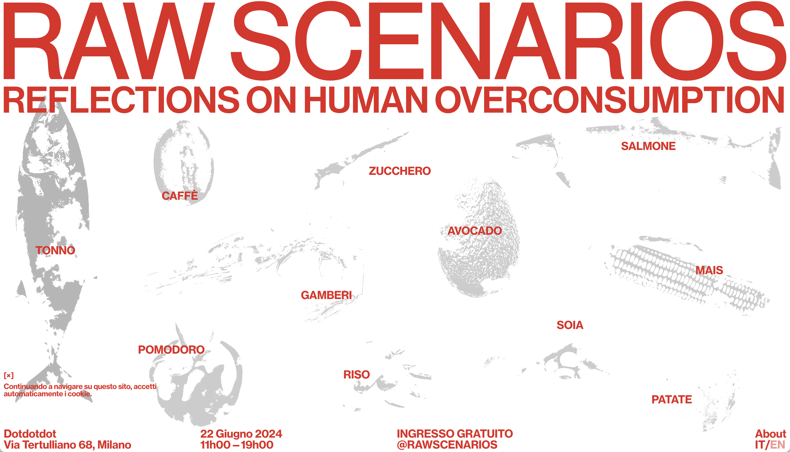
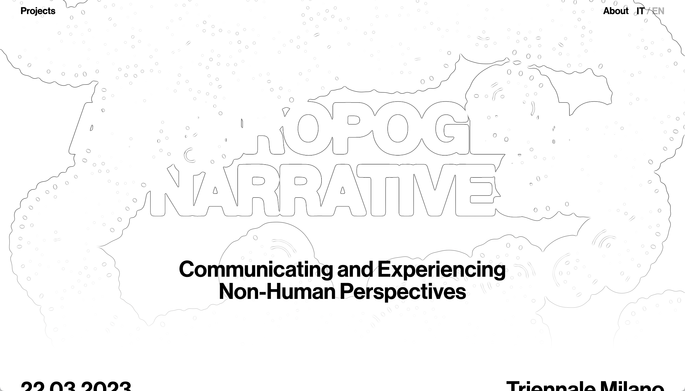
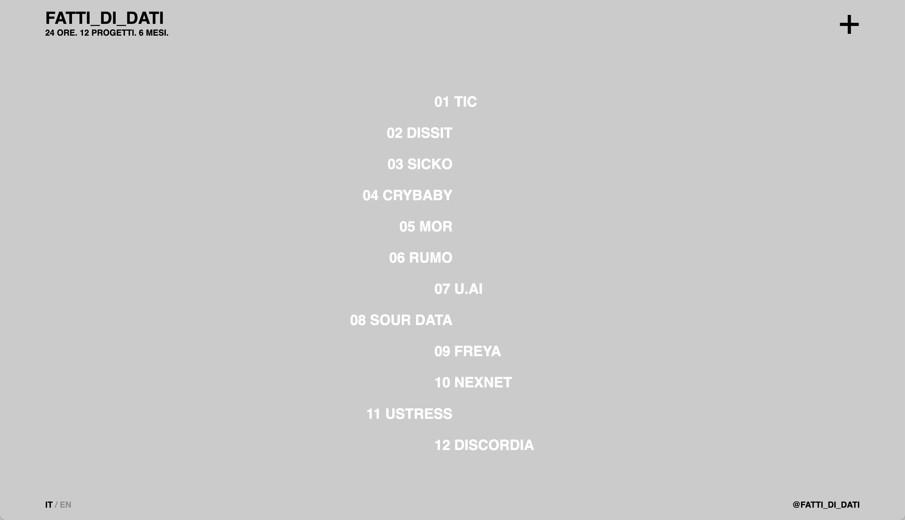
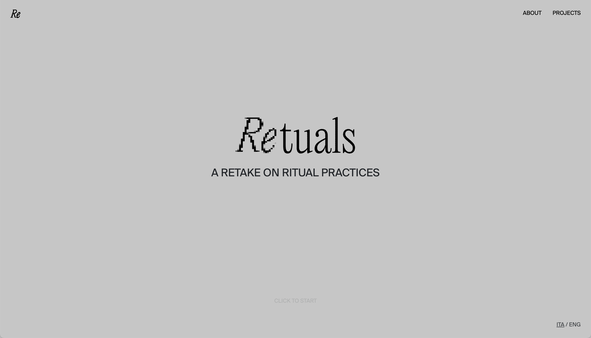
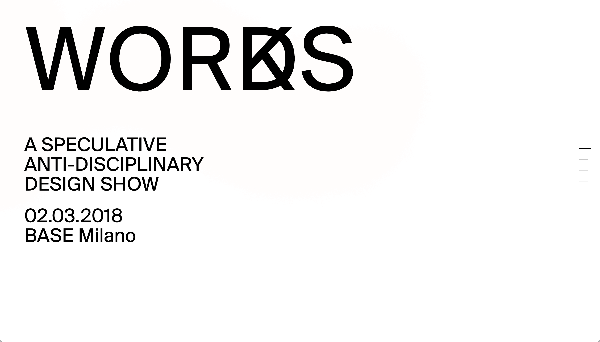
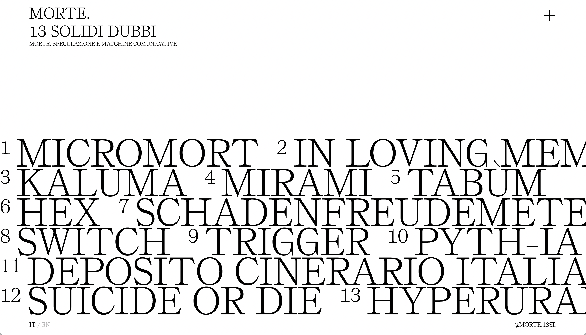
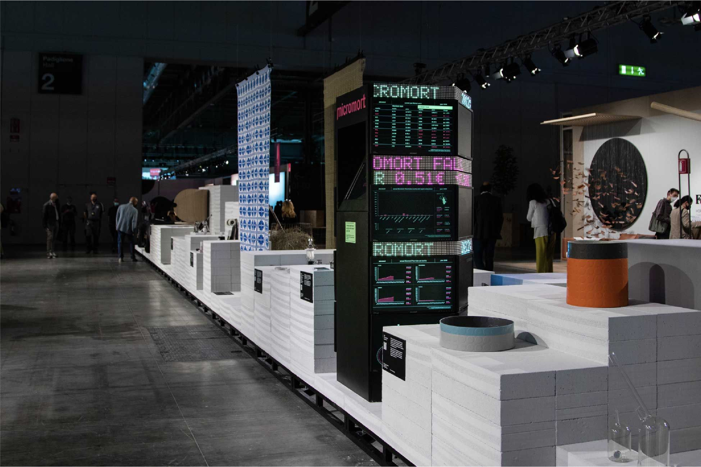
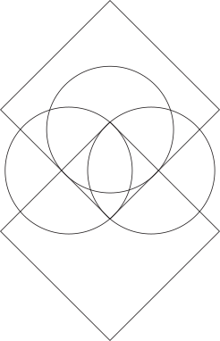

Speculative scenarios, communication systems and interactive prototypes
Projects emerge from the construction of fictional worlds that address contemporary social, cultural and technological issues. Through brands, narratives and public-facing artefacts, complex questions are translated into tangible experiences that can be explored, discussed and critically examined.
Editions

Believe It or Not
Speculating on (un)real conspiracy theories
2024/2025

Raw Scenarios
Speculating on future food systems and their contradictions
2023/2024

Anthropogenic Narratives
Communicating and experiencing non-human perspectives
2022/2023

Fatti di Dati
Data as a tool for imagining alternative presents and possible futures
2021/2022

Retuals
A retake on ritual practices through eleven speculative projects
2020/2021

Morte. 13 solidi dubbi
Thirteen speculations on death translated into communicative machines
2019/2020

What Makes Humans Human?
Communicative machines questioning the realities we take for granted
2018/2019

Words Works
Speculative communication projects exploring language as a design material
2017/2018
Projects


Events
Exhibitions
Press
Awards
Research through teaching in design practice
Research is conducted through teaching as a studio-based practice, where design activity functions simultaneously as a pedagogical and epistemic tool. Within this framework, research and teaching are integrated in a process that produces knowledge through making, testing and reflecting on design outcomes.

Publications
An antidisciplinary space for learning through practice
The Antidisciplinary Communication Design Lab is part of the Final Synthesis Studio C1 within the Bachelor’s Degree in Communication Design at Politecnico di Milano, School of Design, Department of Design. It operates as an academic environment where teaching and research are integrated through design practice, combining educational activities with experimental and research-driven projects in communication design.
Team
Teacher & CoordinatorFrancesco E. GuidaPolitecnico di Milano
TeacherPietro Buffa di CastelaltoFinal Synthesis Studio C1
TeacherGiacomo ScandolaraFinal Synthesis Studio C1
Teaching collaboratorAndrea BraccaloniPolitecnico di Milano